boltdb
etcd数据存储在boltdb。那么boltdb是如何组织你的key-value数据的呢？当你读写一个key时，boltdb是如何工作的？
今天我将通过一个写请求在boltdb中执行的简要流程，分析其背后的boltdb的磁盘文件布局，帮助你了解page、node、bucket等核心数据结构的原理与作用，搞懂boltdb基于B+ tree、各类page实现查找、更新、事务提交的原理，让你明白etcd为什么适合读多写少的场景。
boltdb磁盘布局
在介绍一个put写请求在boltdb中执行原理前，我先给你从整体上介绍下平时你所看到的etcd db文件的磁盘布局，让你了解下db文件的物理存储结构。
boltdb文件指的是你etcd数据目录下的member/snap/db的文件， etcd的key-value、lease、meta、member、cluster、auth等所有数据存储在其中。etcd启动的时候，会通过mmap机制将db文件映射到内存，后续可从内存中快速读取文件中的数据。写请求通过fwrite和fdatasync来写入、持久化数据到磁盘。
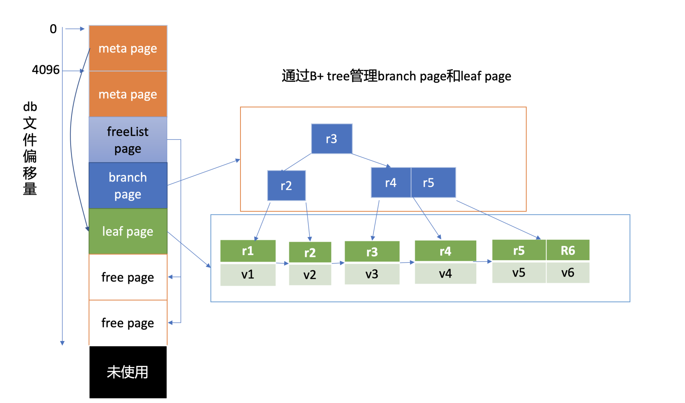
上图是我给你画的db文件磁盘布局，从图中的左边部分你可以看到，文件的内容由若干个page组成，一般情况下page size为4KB。
page按照功能可分为元数据页(meta page)、B+ tree索引节点页(branch page)、B+ tree 叶子节点页(leaf page)、空闲页管理页(freelist page)、空闲页(free page)。
文件最开头的两个page是固定的db元数据meta page，空闲页管理页记录了db中哪些页是空闲、可使用的。索引节点页保存了B+ tree的内部节点，如图中的右边部分所示，它们记录了key值，叶子节点页记录了B+ tree中的key-value和bucket数据。
boltdb逻辑上通过B+ tree来管理branch/leaf page， 实现快速查找、写入key-value数据。
核心 API
了解完boltdb的磁盘布局后，那么如果要在etcd中执行一个put请求，boltdb中是如何执行的呢？ boltdb作为一个库，提供了什么API给client访问写入数据？
boltdb提供了非常简单的API给上层业务使用，当我们执行一个put hello为world命令时，boltdb实际写入的key是版本号，value为mvccpb.KeyValue结构体。
这里我们简化下，假设往key bucket写入一个key为r94，value为world的字符串，其核心代码如下：
// 打开boltdb文件，获取db对象
db,err := bolt.Open("db"， 0600， nil)
if err != nil {
log.Fatal(err)
}
defer db.Close()
// 参数true表示创建一个写事务，false读事务
tx,err := db.Begin(true)
if err != nil {
return err
}
defer tx.Rollback()
// 使用事务对象创建key bucket
b,err := tx.CreatebucketIfNotExists([]byte("key"))
if err != nil {
return err
}
// 使用bucket对象更新一个key
if err := b.Put([]byte("r94"),[]byte("world")); err != nil {
return err
}
// 提交事务
if err := tx.Commit(); err != nil {
return err
}
如上所示，通过boltdb的Open API，我们获取到boltdb的核心对象db实例后，然后通过db的Begin API开启写事务，获得写事务对象tx。
通过写事务对象tx， 你可以创建bucket。这里我们创建了一个名为key的bucket（如果不存在），并使用bucket API往其中更新了一个key为r94，value为world的数据。最后我们使用写事务的Commit接口提交整个事务，完成bucket创建和key-value数据写入。
看起来是不是非常简单，神秘的boltdb，并未有我们想象的那么难。然而其API简单的背后却是boltdb的一系列巧妙的设计和实现。
一个key-value数据如何知道该存储在db在哪个page？如何快速找到你的key-value数据？事务提交的原理又是怎样的呢？
核心数据结构介绍
上面我们介绍boltdb的磁盘布局时提到，boltdb整个文件由一个个page组成。最开头的两个page描述db元数据信息，而它正是在client调用boltdb Open API时被填充的。那么描述磁盘页面的page数据结构是怎样的呢？元数据页又含有哪些核心数据结构？
boltdb本身自带了一个工具bbolt，它可以按页打印出db文件的十六进制的内容，下面我们就使用此工具来揭开db文件的神秘面纱。
下图左边的十六进制是执行如下 bbolt dump 命令，所打印的boltdb第0页的数据，图的右边是对应的page磁盘页结构和meta page的数据结构。
$ ./bbolt dump ./infra1.etcd/member/snap/db 0
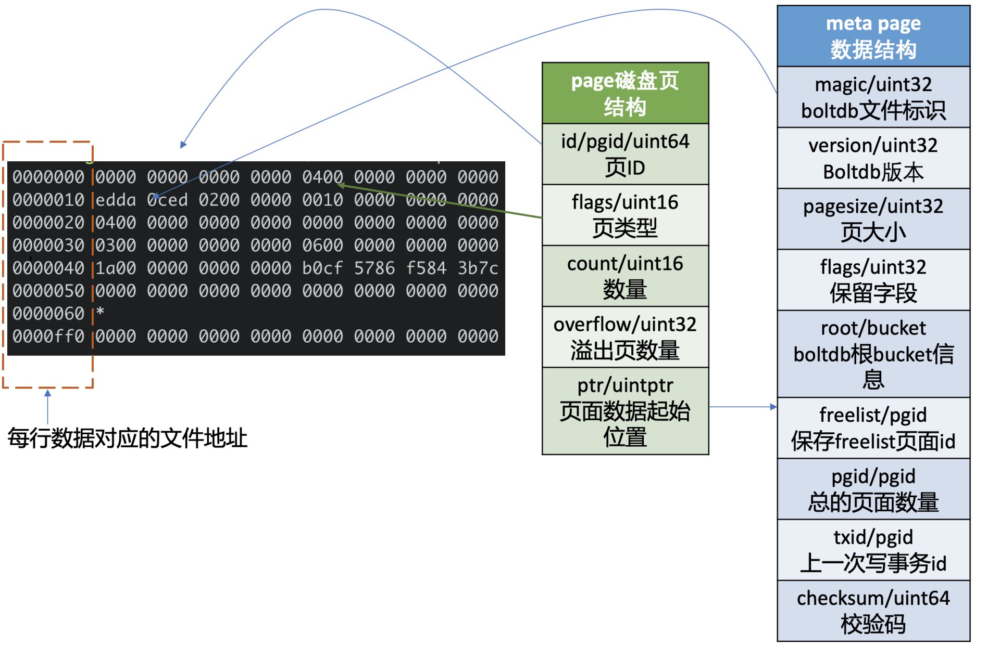
一看上图中的十六进制数据，你可能很懵，没关系，在你了解page磁盘页结构、meta page数据结构后，你就能读懂其含义了。
page磁盘页结构
我们先了解下page磁盘页结构，如上图所示，它由页ID(id)、页类型(flags)、数量(count)、溢出页数量(overflow)、页面数据起始位置(ptr)字段组成。
页类型目前有如下四种：0x01表示branch page，0x02表示leaf page，0x04表示meta page，0x10表示freelist page。
数量字段仅在页类型为leaf和branch时生效，溢出页数量是指当前页面数据存放不下，需要向后再申请overflow个连续页面使用，页面数据起始位置指向page的载体数据，比如meta page、branch/leaf等page的内容。
meta page数据结构
第0、1页我们知道它是固定存储db元数据的页(meta page)，那么meta page它为了管理整个boltdb含有哪些信息呢？
如上图中的meta page数据结构所示，你可以看到它由boltdb的文件标识(magic)、版本号(version)、页大小(pagesize)、boltdb的根bucket信息(root bucket)、freelist页面ID(freelist)、总的页面数量(pgid)、上一次写事务ID(txid)、校验码(checksum)组成。
meta page十六进制分析
了解完page磁盘页结构和meta page数据结构后，我再结合图左边的十六进数据和你简要分析下其含义。
上图中十六进制输出的是db文件的page 0页结构，左边第一列表示此行十六进制内容对应的文件起始地址，每行16个字节。
结合page磁盘页和meta page数据结构我们可知，第一行前8个字节描述pgid(忽略第一列)是0。接下来2个字节描述的页类型， 其值为0x04表示meta page， 说明此页的数据存储的是meta page内容，因此ptr开始的数据存储的是meta page内容。
正如你下图中所看到的，第二行首先含有一个4字节的magic number(0xED0CDAED)，通过它来识别当前文件是否boltdb，接下来是两个字节描述boltdb的版本号0x2， 然后是四个字节的page size大小，0x1000表示4096个字节，四个字节的flags为0。
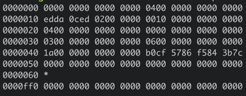
第三行对应的就是meta page的root bucket结构（16个字节），它描述了boltdb的root bucket信息，比如一个db中有哪些bucket， bucket里面的数据存储在哪里。
第四行中前面的8个字节，0x3表示freelist页面ID，此页面记录了db当前哪些页面是空闲的。后面8个字节，0x6表示当前db总的页面数。
第五行前面的8个字节，0x1a表示上一次的写事务ID，后面的8个字节表示校验码，用于检测文件是否损坏。
了解完db元数据页面原理后，那么boltdb是如何根据元数据页面信息快速找到你的bucket和key-value数据呢？
这就涉及到了元数据页面中的root bucket，它是个至关重要的数据结构。下面我们看看它是如何管理一系列bucket、帮助我们查找、写入key-value数据到boltdb中。
bucket数据结构
如下命令所示，你可以使用bbolt buckets命令，输出一个db文件的bucket列表。执行完此命令后，我们可以看到之前介绍过的auth/lease/meta等熟悉的bucket，它们都是etcd默认创建的。那么boltdb是如何存储、管理bucket的呢？
$ ./bbolt buckets ./infra1.etcd/member/snap/db
alarm
auth
authRoles
authUsers
cluster
key
lease
members
members_removed
meta
在上面我们提到过meta page中的，有一个名为root、类型bucket的重要数据结构，如下所示，bucket由root和sequence两个字段组成，root表示该bucket根节点的page id。注意meta page中的bucket.root字段，存储的是db的root bucket页面信息，你所看到的key/lease/auth等bucket都是root bucket的子bucket。
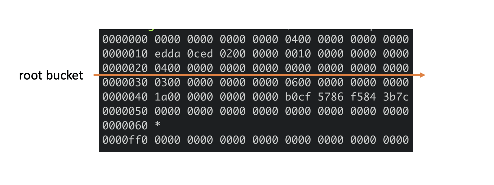
上面meta page十六进制图中，第三行的16个字节就是描述的root bucket信息。root bucket指向的page id为4，page id为4的页面是什么类型呢？ 我们可以通过如下bbolt pages命令看看各个page类型和元素数量，从下图结果可知，4号页面为leaf page。
$ ./bbolt pages ./infra1.etcd/member/snap/db
ID TYPE ITEMS OVRFLW
======== ========== ====== ======
0 meta 0
1 meta 0
2 free
3 freelist 2
4 leaf 10
5 free
通过上面的分析可知，当bucket比较少时，我们子bucket数据可直接从meta page里指向的leaf page中找到。
leaf page
meta page的root bucket直接指向的是page id为4的leaf page， page flag为0x02， leaf page它的磁盘布局如下图所示，前半部分是leafPageElement数组，后半部分是key-value数组。
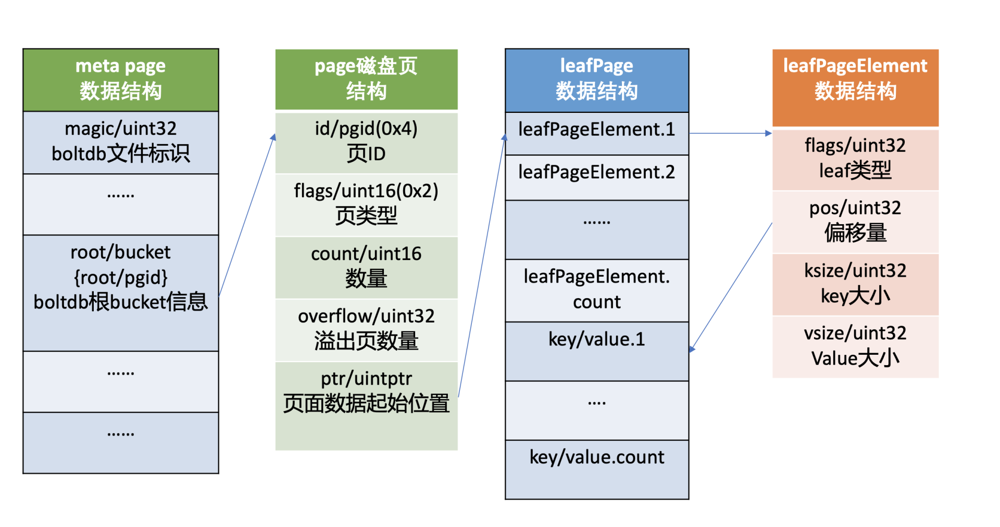
leafPageElement包含leaf page的类型flags， 通过它可以区分存储的是bucket名称还是key-value数据。
当flag为bucketLeafFlag(0x01)时，表示存储的是bucket数据，否则存储的是key-value数据，leafPageElement它还含有key-value的读取偏移量，key-value大小，根据偏移量和key-value大小，我们就可以方便地从leaf page中解析出所有key-value对。
当存储的是bucket数据的时候，key是bucket名称，value则是bucket结构信息。bucket结构信息含有root page信息，通过root page（基于B+ tree查找算法），你可以快速找到你存储在这个bucket下面的key-value数据所在页面。
从上面分析你可以看到，每个子bucket至少需要一个page来存储其下面的key-value数据，如果子bucket数据量很少，就会造成磁盘空间的浪费。实际上boltdb实现了inline bucket，在满足一些条件限制的情况下，可以将小的子bucket内嵌在它的父亲叶子节点上，友好的支持了大量小bucket。
为了方便大家快速理解核心原理，本节我们讨论的bucket是假设都是非inline bucket。
那么boltdb是如何管理大量bucket、key-value的呢？
branch page
boltdb使用了B+ tree来高效管理所有子bucket和key-value数据，因此它可以支持大量的bucket和key-value，只不过B+ tree的根节点不再直接指向leaf page，而是branch page索引节点页。branch page flags为0x01。它的磁盘布局如下图所示，前半部分是branchPageElement数组，后半部分是key数组。
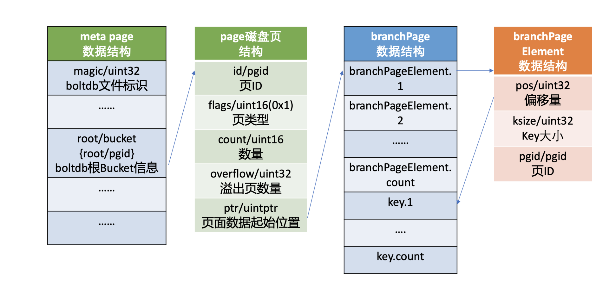
branchPageElement包含key的读取偏移量、key大小、子节点的page id。根据偏移量和key大小，我们就可以方便地从branch page中解析出所有key，然后二分搜索匹配key，获取其子节点page id，递归搜索，直至从bucketLeafFlag类型的leaf page中找到目的bucket name。
注意，boltdb在内存中使用了一个名为node的数据结构，来保存page反序列化的结果。下面我给出了一个boltdb读取page到node的代码片段，你可以直观感受下。
func (n *node) read(p *page) {
n.pgid = p.id
n.isLeaf = ((p.flags & leafPageFlag) != 0)
n.inodes = make(inodes, int(p.count))
for i := 0; i < int(p.count); i++ {
inode := &n.inodes[i]
if n.isLeaf {
elem := p.leafPageElement(uint16(i))
inode.flags = elem.flags
inode.key = elem.key()
inode.value = elem.value()
} else {
elem := p.branchPageElement(uint16(i))
inode.pgid = elem.pgid
inode.key = elem.key()
}
}
从上面分析过程中你会发现，boltdb存储bucket和key-value原理是类似的，将page划分成branch page、leaf page，通过B+ tree来管理实现。boltdb为了区分leaf page存储的数据类型是bucket还是key-value，增加了标识字段（leafPageElement.flags），因此key-value的数据存储过程我就不再重复分析了。
freelist
介绍完bucket、key-value存储原理后，我们再看meta page中的另外一个核心字段freelist，它的作用是什么呢？
我们知道boltdb将db划分成若干个page，那么它是如何知道哪些page在使用中，哪些page未使用呢？
答案是boltdb通过meta page中的freelist来管理页面的分配，freelist page中记录了哪些页是空闲的。当你在boltdb中删除大量数据的时候，其对应的page就会被释放，页ID存储到freelist所指向的空闲页中。当你写入数据的时候，就可直接从空闲页中申请页面使用。
下面meta page十六进制图中，第四行的前8个字节就是描述的freelist信息，page id为3。我们可以通过bbolt page命令查看3号page内容，如下所示，它记录了2和5为空闲页，与我们上面通过bbolt pages命令所看到的信息一致。
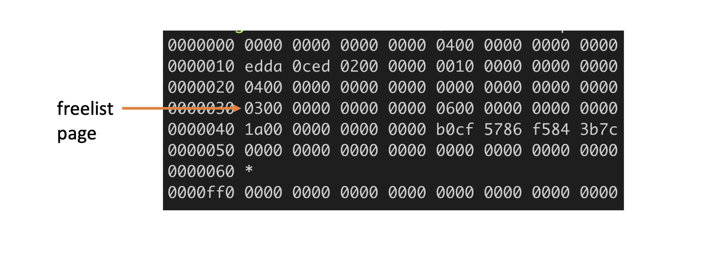
$ ./bbolt page ./infra1.etcd/member/snap/db 3
下图是freelist page存储结构，pageflags为0x10，表示freelist类型的页，ptr指向空闲页id数组。注意在boltdb中支持通过多种数据结构（数组和hashmap）来管理free page，这里我介绍的是数组。
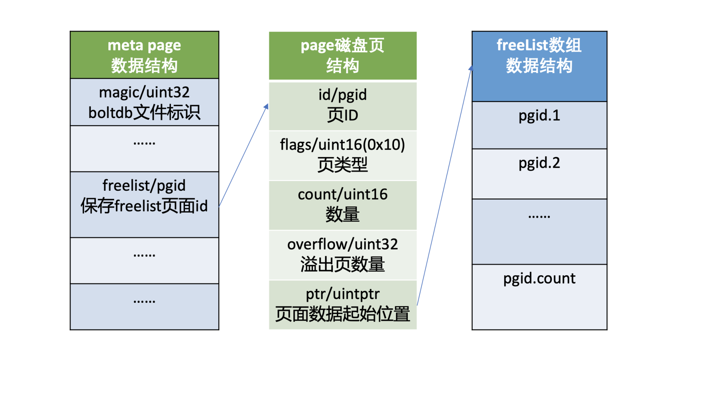
Open原理
了解完核心数据结构后，我们就很容易搞懂boltdb Open API的原理了。
首先它会打开db文件并对其增加文件锁，目的是防止其他进程也以读写模式打开它后，操作meta和free page，导致db文件损坏。
其次boltdb通过mmap机制将db文件映射到内存中，并读取两个meta page到db对象实例中，然后校验meta page的magic、version、checksum是否有效，若两个meta page都无效，那么db文件就出现了严重损坏，导致异常退出。
Put原理
那么成功获取db对象实例后，通过bucket API创建一个bucket、发起一个Put请求更新数据时，boltdb是如何工作的呢？
根据我们上面介绍的bucket的核心原理，它首先是根据meta page中记录root bucket的root page，按照B+ tree的查找算法，从root page递归搜索到对应的叶子节点page面，返回key名称、leaf类型。
如果leaf类型为bucketLeafFlag，且key相等，那么说明已经创建过，不允许bucket重复创建，结束请求。否则往B+ tree中添加一个flag为bucketLeafFlag的key，key名称为bucket name，value为bucket的结构。
创建完bucket后，你就可以通过bucket的Put API发起一个Put请求更新数据。它的核心原理跟bucket类似，根据子bucket的root page，从root page递归搜索此key到leaf page，如果没有找到，则在返回的位置处插入新key和value。
为了方便你理解B+ tree查找、插入一个key原理，我给你构造了的一个max degree为5的B+ tree，下图是key r94的查找流程图。
那么如何确定这个key的插入位置呢？
首先从boltdb的key bucket的root page里，二分查找大于等于r94的key所在page，最终找到key r9指向的page（流程1）。r9指向的page是个leaf page，B+ tree需要确保叶子节点key的有序性，因此同样二分查找其插入位置，将key r94插入到相关位置（流程二）。
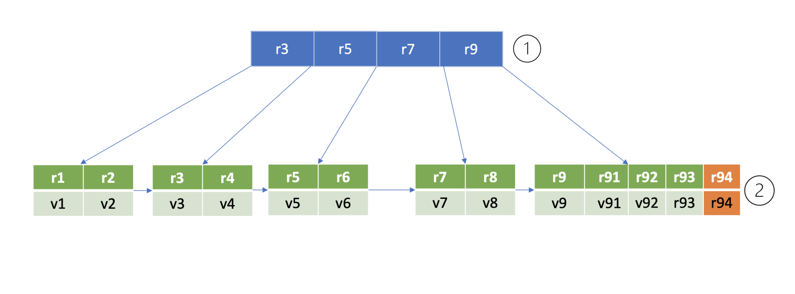
在核心数据结构介绍中，我和你提到boltdb在内存中通过node数据结构来存储page磁盘页内容，它记录了key-value数据、page id、parent及children的node、B+ tree是否需要进行重平衡和分裂操作等信息。
因此，当我们执行完一个put请求时，它只是将值更新到boltdb的内存node数据结构里，并未持久化到磁盘中。
事务提交原理
那么boltdb何时将数据持久化到db文件中呢？
当你的代码执行tx.Commit API时，它才会将我们上面保存到node内存数据结构中的数据，持久化到boltdb中。下图我给出了一个事务提交的流程图，接下来我就分别和你简要分析下各个核心步骤。
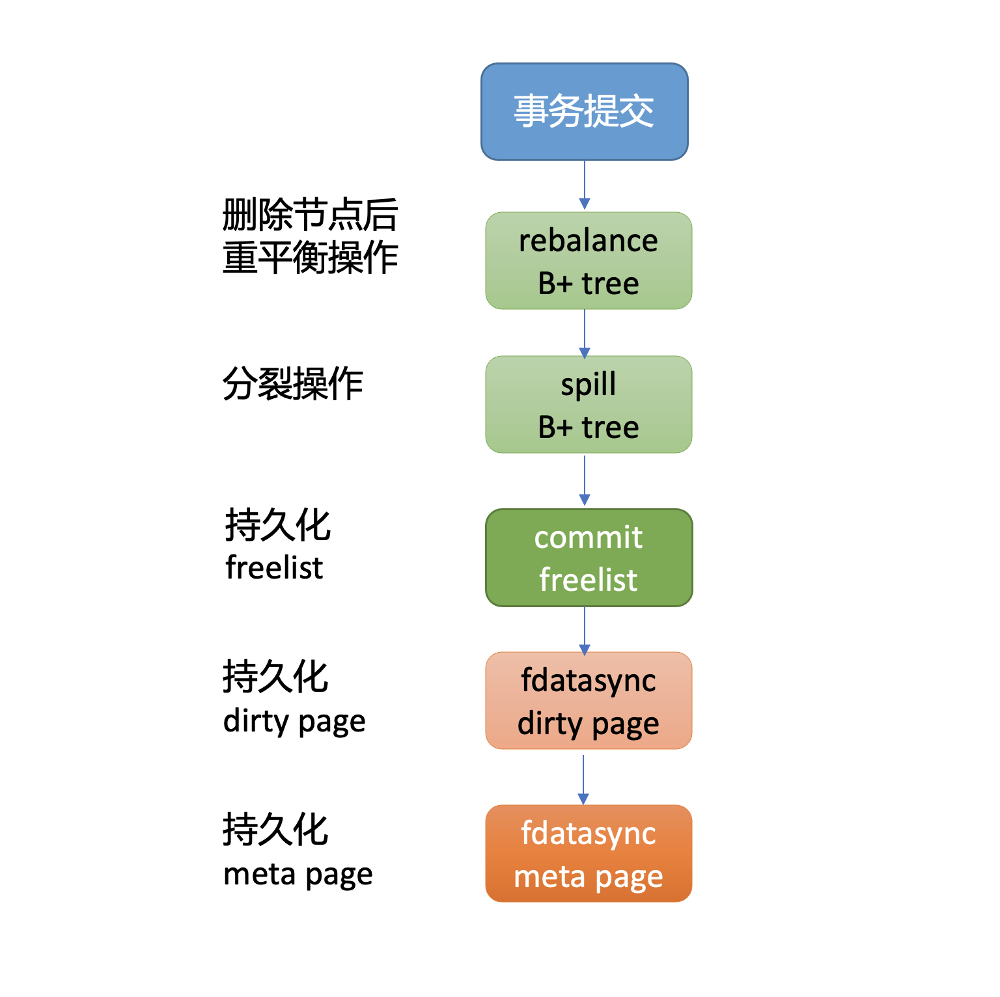
首先从上面put案例中我们可以看到，插入了一个新的元素在B+ tree的叶子节点，它可能已不满足B+ tree的特性，因此事务提交时，第一步首先要调整B+ tree，进行重平衡、分裂操作，使其满足B+ tree树的特性。上面案例里插入一个key r94后，经过重平衡、分裂操作后的B+ tree如下图所示。
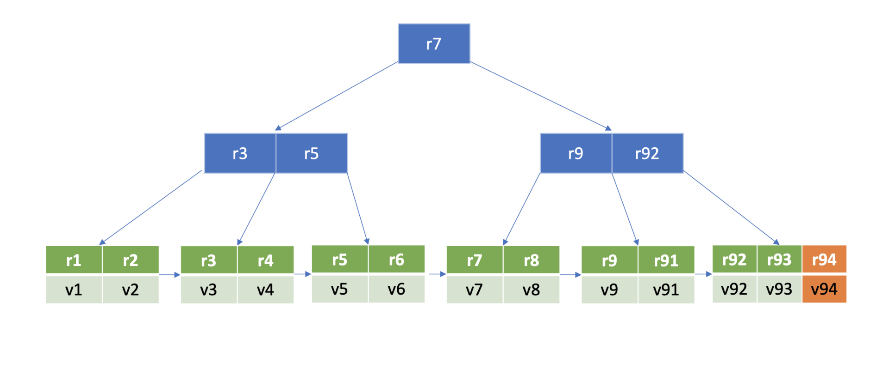
在重平衡、分裂过程中可能会申请、释放free page，freelist所管理的free page也发生了变化。因此事务提交的第二步，就是持久化freelist。
注意，在etcd v3.4.9中，为了优化写性能等，freelist持久化功能是关闭的。etcd启动获取boltdb db对象的时候，boltdb会遍历所有page，构建空闲页列表。
事务提交的第三步就是将client更新操作产生的dirty page通过fdatasync系统调用，持久化存储到磁盘中。
最后，在执行写事务过程中，meta page的txid、freelist等字段会发生变化，因此事务的最后一步就是持久化meta page。
通过以上四大步骤，我们就完成了事务提交的工作，成功将数据持久化到了磁盘文件中，安全地完成了一个put操作。